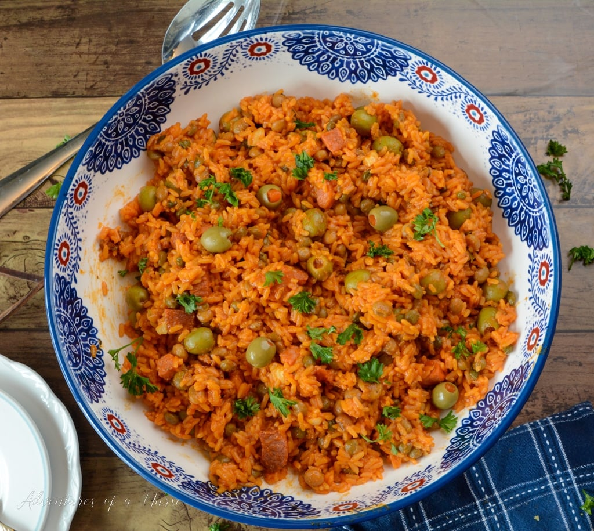

Arroz con Gandules

Description
A classic Puerto Rican dish. Rice and beans with an added kick from sofrito and annatto seeds. Tastes great paired with chicken, but this dish has a very full flavor that holds up on its own too.
Ingredients
- 1/2 cup canola oil
- 3/4 cups annatto seeds
- 2 cups rice
- 2 cans gandules
- 1 cup sofrito
- 4 cups water
- 3 packets Goya Chicken Bouillon
Steps
- Heat canola oil over high flame.
- Add annatto seeds to oil.
- Once oil is deep red, strain seeds and pour oil into cooking pot.
- Add rice to heated oil.
- Cook for 5 minutes over high flame, constantly stirring.
- Drain gandules (save excess liquid and use as part of your 4 cups of water) and pour them into rice. Stir until mixed.
- Add sofrito and stir until mixed.
- Let cook for 3 minutes.
- Pour 4 cups of water into pot.Stir until completely mixed.
- Add 3 packets of chicken bouillon.
- Cover and cook on low heat for 15-20 minutes.
- Switch to low heat, uncover, and stir.
- Cook for 5-10 minutes (uncovered), occasionally stirring.